DATA ENGINEERING / GENERATIVE AI
I make data
work harder.
And AI work
smarter.
I'm Anas Ben Amor, a Data & GenAI Engineer building reliable data foundations and thoughtful AI products that solve real problems.
ANAS BEN AMORDATA / AI / ENGINEERING
TUNISIA 34.0 N / 9.0 E
A DATA ENGINEER'S POINT OF VIEW
The path from raw data to useful outcomes
- 01SourceAPIs & databases
- 02IngestKafka & NiFi
- 03TransformSpark & dbt
- 04OrchestrateAirflow
- 05DeliverAnalytics & GenAI
A LITTLE ABOUT ME / 01
Good data is the start.
Good decisions are the point.
At Talan Tunisia Consulting, I work on data initiatives for GRDF, specializing in cloud data modernization with Snowflake and dbt. My work includes migrating legacy Informatica PowerCenter transformation flows, designing data architectures, building data models, and delivering reliable transformations.
I build and adapt reusable Airflow orchestration templates, optimize processing performance, and lead production releases. I also apply GenAI to accelerate delivery, from translating functional requirements into dbt projects to generating orchestration workflows.
01Data platforms
02GenAI applications
03Production-minded engineering
GENAI ENGINEERING / ILLUSTRATIVE WORKFLOW
From an idea to reviewed code
PROJECT ARCHIVE / 02
Questions behind the builds.
Each project began with a question. Choose one to explore the idea, system flow, and technology behind it.
Showing 8 projects
SKILLS & TECHNOLOGIES / 03
Skills for the
full data lifecycle.
From ingestion and modelling to AI applications and production delivery.
01+
Programming & data systems
Python, SQL, Java, PostgreSQL, Oracle, MySQL, MongoDB, Snowflake
02+
Data engineering & orchestration
Apache Spark, Kafka, Airflow, dbt, Informatica, Apache NiFi, Flink
03+
Generative AI & machine learning
LLMs, RAG, LangChain, LangGraph, LlamaIndex, Pinecone, TensorFlow
04+
Cloud, DevOps & observability
AWS, Azure, Docker, Kubernetes, GitHub Actions, Jenkins, Grafana, Prometheus
05+
Analytics & visualisation
Power BI, Kibana, Elasticsearch
EXPERIENCE & EDUCATION / 04
Where I've grown.
PROFESSIONAL EXPERIENCE2025 — PRESENT
Data Consultant
Talan Tunisia Consulting / GRDF
I specialize in modernizing legacy data platforms for the cloud: migrating Informatica PowerCenter transformation flows to Snowflake and dbt, designing platform-ready data architectures, and delivering robust models and transformations. I build and customize reusable Airflow orchestration templates, optimize processing performance, and lead production releases. I also use GenAI to turn functional requirements into dbt projects and orchestration workflows, helping teams deliver data solutions more efficiently.
Internship experience
End-of-study internship
Talan Tunisia Consulting / Data Engineering & Generative AI
Worked across data engineering and generative AI, building experience that connects data workflows with AI capabilities.
Data Science Intern
Sagemcom / Data Science
Applied data science methods in an industry internship, strengthening my experience working with data-driven problems.
Data Engineering & GenAI Intern
Orthlane / Data Engineering & Generative AI
Explored how data engineering workflows and generative AI can work together in practical solutions.
Web Development Intern
nachd it / Web Development
Built foundational experience in developing web applications and delivering web-focused solutions.
Education
Engineering Cycle
Higher School of Communication of Tunis
Preparatory Cycle
Preparatory Institute for Engineering, Monastir
High School
Lycée Tahar Sfar, Sousse
BEYOND THE ROLE / 05
A journey built
beyond the job title.
My growth is not limited to my day-to-day work. I keep learning through focused study and hands-on projects, while volunteering in technical communities and events. These experiences help me stay curious, collaborate with purpose, and bring a broader perspective to the systems I build.
01 Keep learning02 Share knowledge03 Build together
CONTINUOUS LEARNING / 06
Credentials.
Selected credentials across cloud, data engineering, machine learning, and DevOps.
01
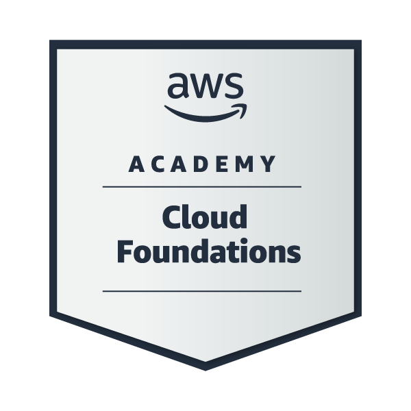
CLOUDAWS Academy Cloud FoundationsAWS AcademyView 02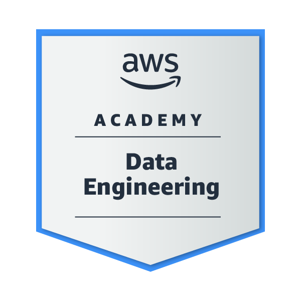
DATA ENGINEERINGAWS Academy Data EngineeringAWS AcademyView 03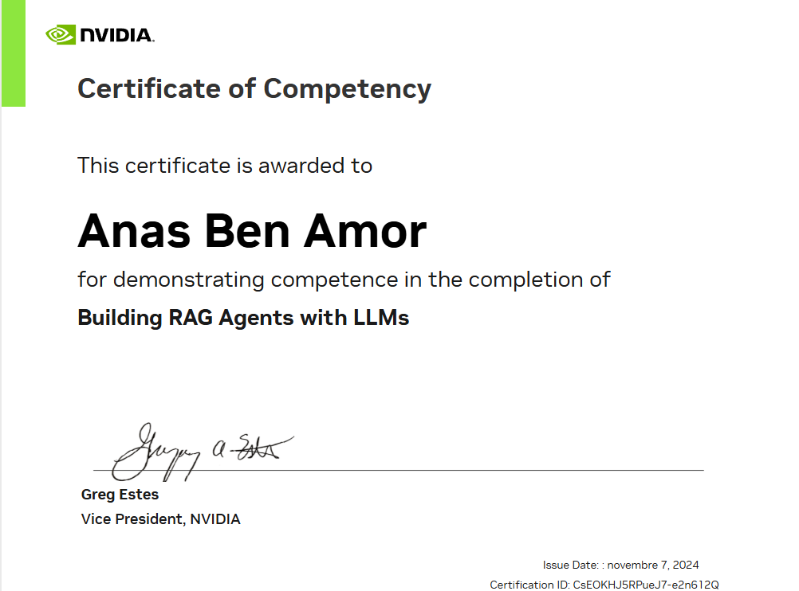
GENERATIVE AIBuilding RAG Agents with LLMsNVIDIA / Nov 2024View 04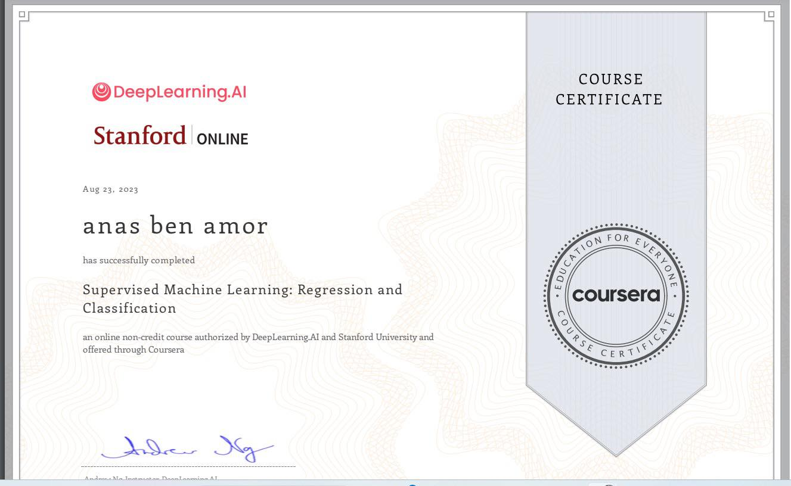
MACHINE LEARNINGSupervised Machine Learning: Regression and ClassificationDeepLearning.AI & Stanford Online / Aug 2023View 05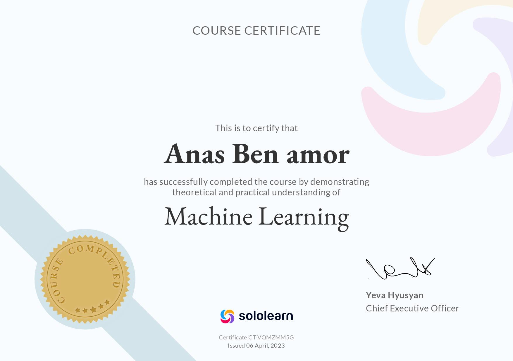
MACHINE LEARNINGMachine LearningSoloLearn / Apr 2023View 06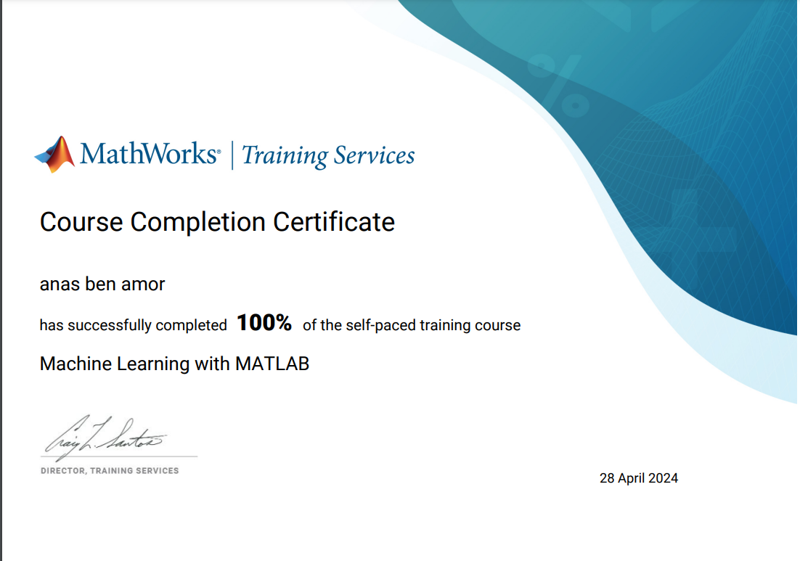
MACHINE LEARNINGMachine Learning with MATLABMathWorks / Apr 2024View 07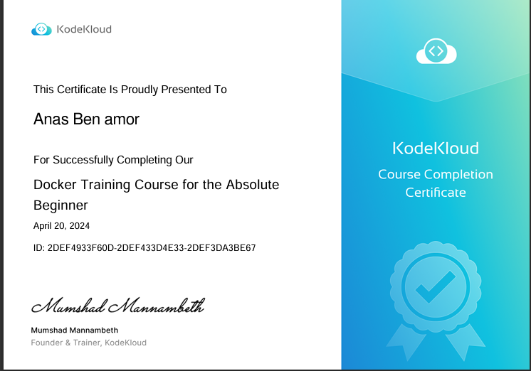
DEVOPSDocker Training Course for the Absolute BeginnerKodeKloud / Apr 2024View 08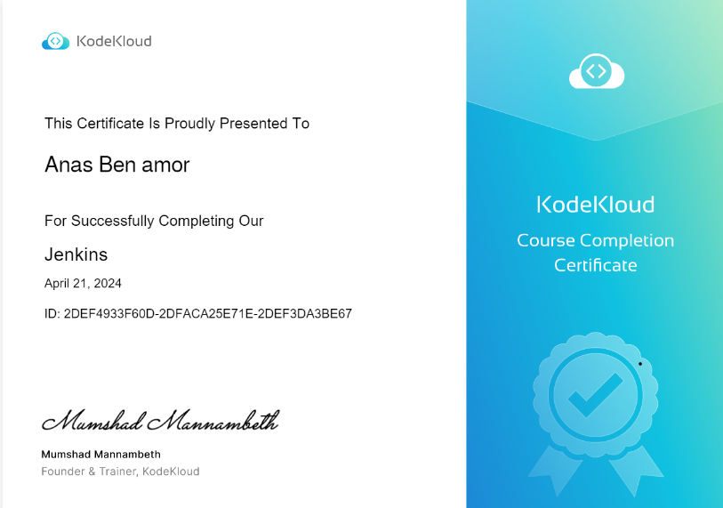
DEVOPSJenkinsKodeKloud / Apr 2024View 09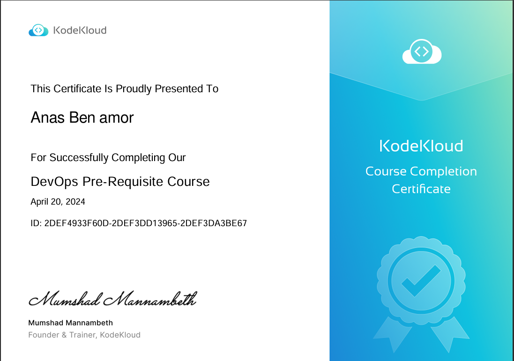
DEVOPSDevOps Pre-Requisite CourseKodeKloud / Apr 2024View 10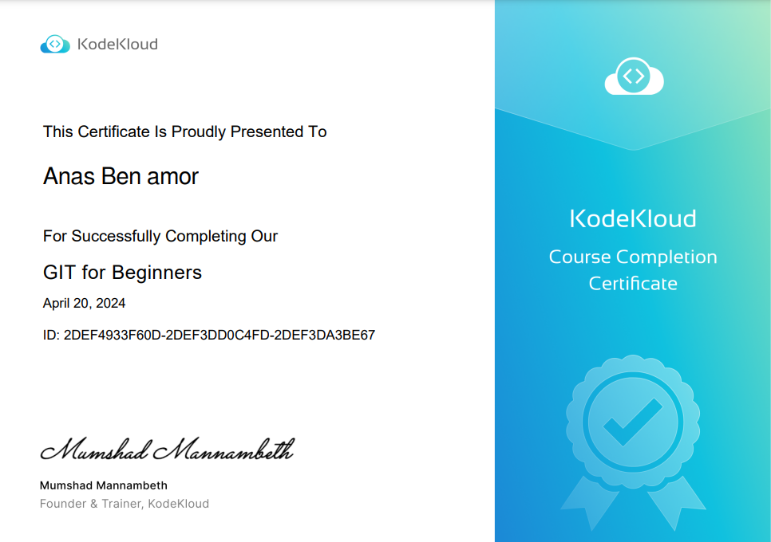
DEVELOPER TOOLSGit for BeginnersKodeKloud / Apr 2024ViewCOMMUNITY / 07
Volunteering & service.
Community events and organizations where I contributed across logistics, people operations, and media.

EVENT LOGISTICS
IndabaX 2023
Logistics Manager
Contribution & professional growth
CONTRIBUTION
Coordinated event logistics for a community centered on AI and data.
PROFESSIONAL VALUE
Strengthened planning, cross-team coordination, and calm execution under time pressure.
EVENT LOGISTICS
Forum SUP'COM 2023
Logistics Manager
Contribution & professional growth
CONTRIBUTION
Supported the planning and logistics behind the SUP'COM forum.
PROFESSIONAL VALUE
Built stronger operational coordination, communication, and attention to detail.
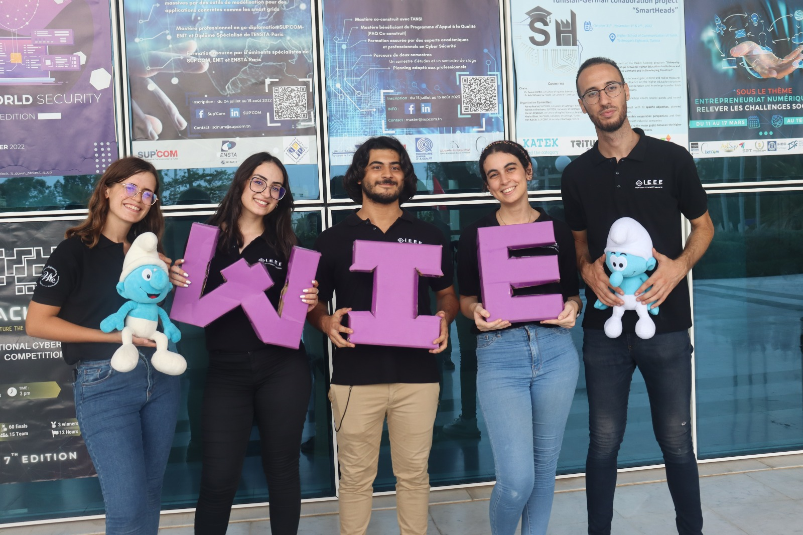
PEOPLE OPERATIONS
IEEE WIE SUPCOM Affinity Group
HR Manager
Contribution & professional growth
CONTRIBUTION
Contributed to HR activities and supporting people within the affinity group.
PROFESSIONAL VALUE
Practiced active listening, understanding different perspectives, and helping teams work through disagreements constructively.
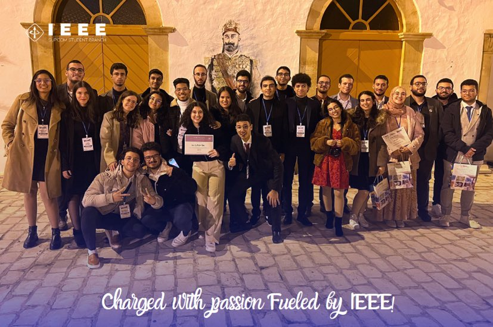
IEEE / TSYP 11
SIGHT Challenge & STAR Program
TSYP 11 volunteer
Contribution & professional growth
CONTRIBUTION
Participated in the SIGHT Challenge and STAR Program as part of TSYP 11.
PROFESSIONAL VALUE
Gained experience collaborating with a technical community around shared program goals.
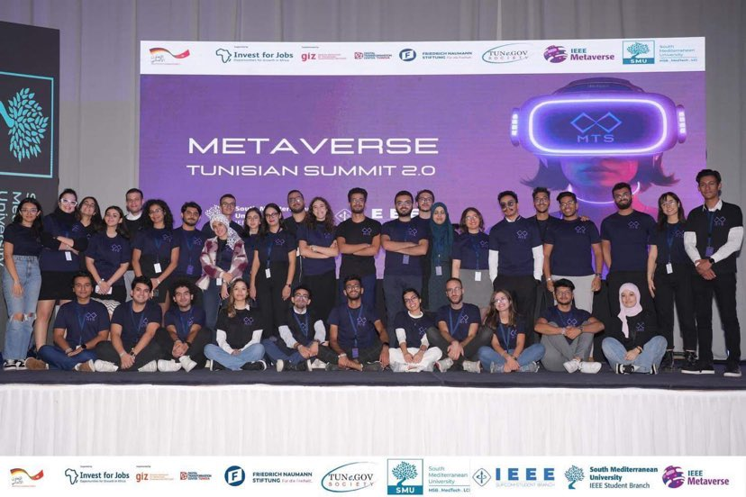
EVENT LOGISTICS
Metaverse Tunisia Summit 2.0
Logistics
Contribution & professional growth
CONTRIBUTION
Supported logistics for a technology-focused summit.
PROFESSIONAL VALUE
Sharpened adaptability, organization, and coordination in a live event environment.
EVENT MEDIA
Code In The Dark
Media Member
Contribution & professional growth
CONTRIBUTION
Contributed to the event's media activities and coverage.
PROFESSIONAL VALUE
Developed concise communication, visual storytelling, and collaboration with event teams.
HAVE A PROJECT IN MIND? / 08
Let's make
something matter.
Open to freelance projects and thoughtful collaborations across data engineering and GenAI.
EMAIL ME DIRECTLYbenamoranas2001@gmail.comOpens a new email to AnasCURRENTLYAvailable for freelance projects
Replies within 24 hours